KamilZagrodnik
Lead Product Designer, 15+ years of experience
Shipped AI features to enterprise SaaS teams. Built e-commerce tools for hundreds of active sellers. I own the full design process - and I work best where the problem is undefined and the stakes are real.
AI That Acts
Before Problems
Happen
The Problem
Organizations tracked dozens of strategic initiatives - but problems were only discovered when it was too late. Managers spent hours manually reviewing status. Milestone planning was guesswork. The platform was reactive: it showed what happened, not what would happen.
The Opportunity
What if the platform didn't just track progress - but actively helped users succeed? Two features emerged as the highest-leverage bets: proactive risk detection and AI-generated milestone planning.
The Decision
A dedicated AI page was the suggested direction - easier to build, easier to scope. I proposed embedding insights into existing views instead: pulling managers out of their workflow creates high risk of disengagement. I presented the rationale, CEO aligned. AI lives in Strategic Plan, Initiative Details, and My Page.
Proactive
Insights
Three entry points. Insights surface where the work already lives - Strategic Plan for executives scanning across the portfolio, Initiative Details for managers reviewing specific projects, My Page for owners tracking their own commitments. No separate AI dashboard. No new habit to build.
CEO point of view
The CEO opens Strategic Plan to scan 20+ initiatives. The question isn't "what happened?" - it's "what needs my attention right now?"
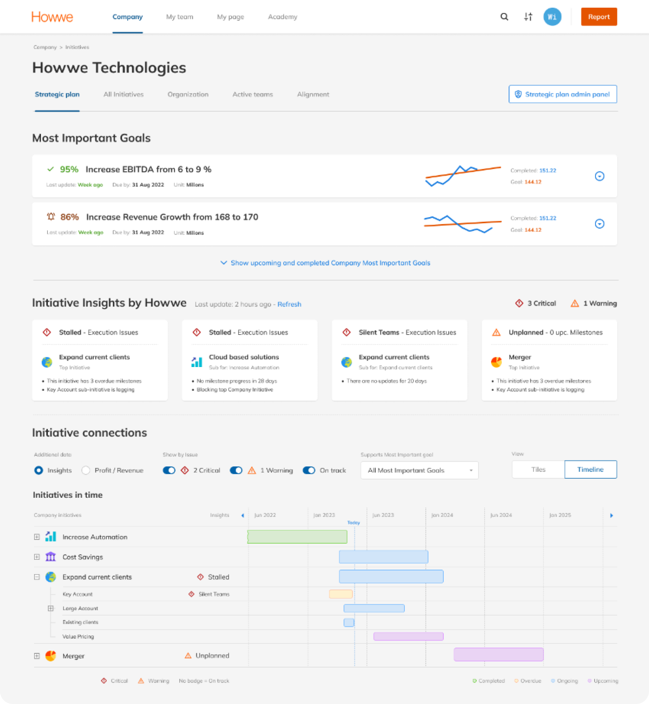
Manager
point of view
The manager opens Initiative Details to review a specific project. The question isn't "what's in here?" - it's "what needs action on this initiative?"
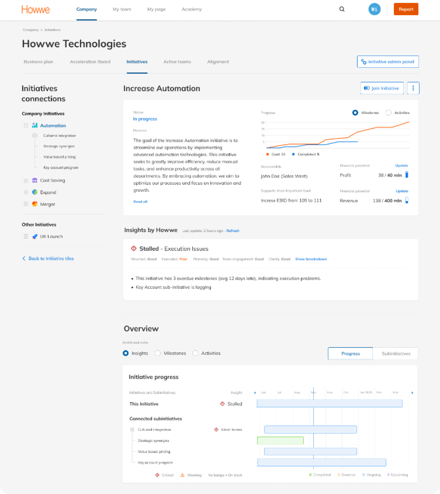
Owner
point of view
The owner opens My Page to track their own commitments. Personal accountability without portfolio noise - only what belongs to them.
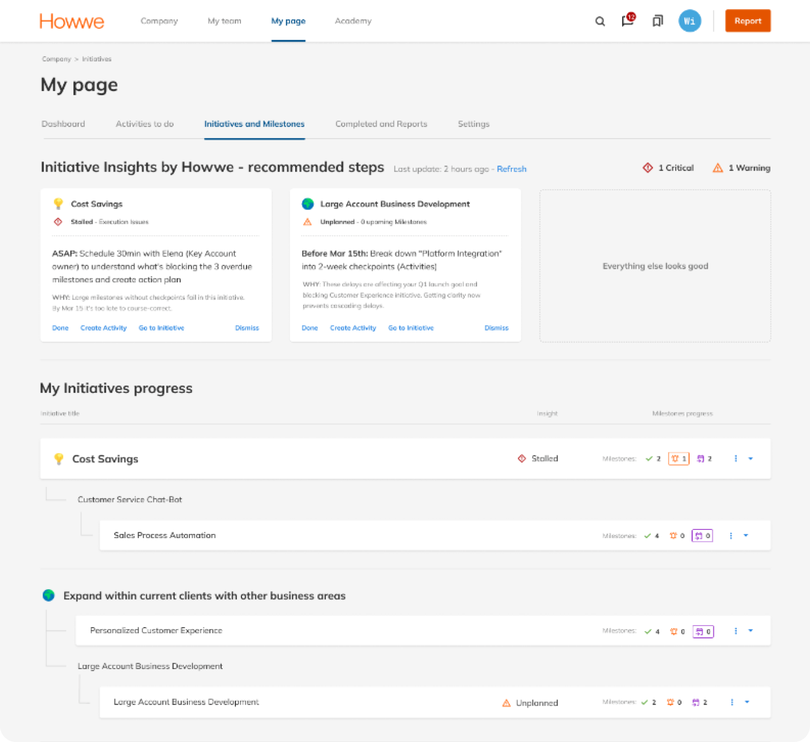
AI reads
the room
The manager describes a goal in plain language. In seconds, the platform returns a structured milestone roadmap - ready to review, edit, and confirm. No templates, no forms. The AI doesn't wait for perfect input - it asks. Targeted questions based on what was already shared, until there's enough context to build a solid plan.
Context before
questions
Before asking anything, the system surfaces what it already extracted - purpose, goals, timeline. No blank canvas, no cold start.
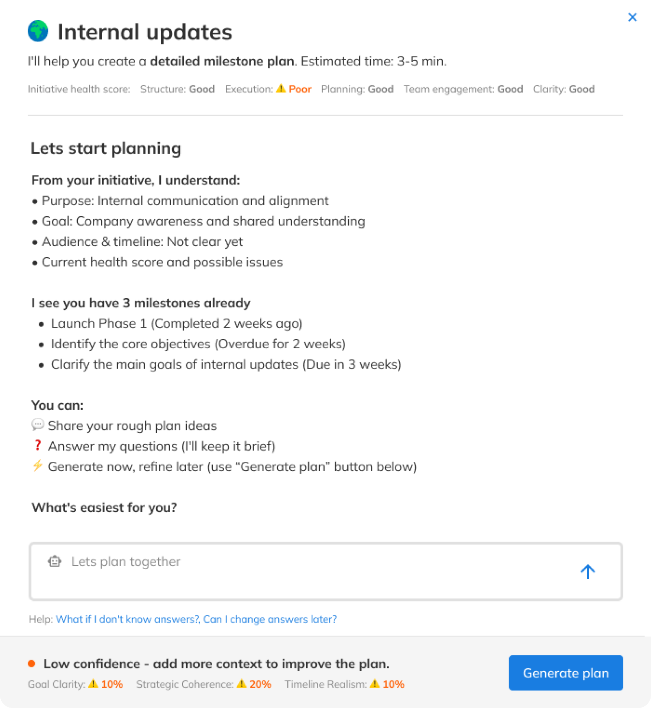
Conversation
shapes the plan
The AI asks targeted clarifications based on what was shared. No fixed sequence - the conversation adapts to what's missing.
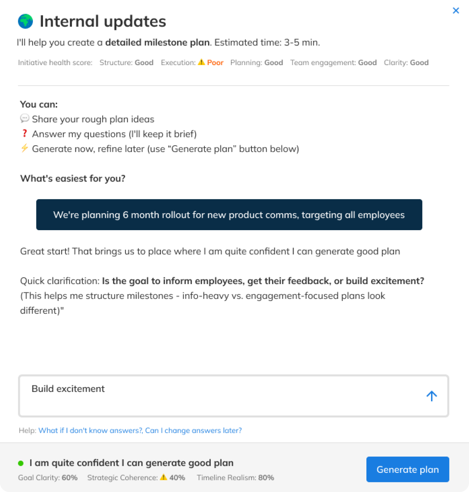
Review before
you commit
Full-page workspace - chat on the left, milestone cards on the right. Generation is the beginning of the conversation, not the end.
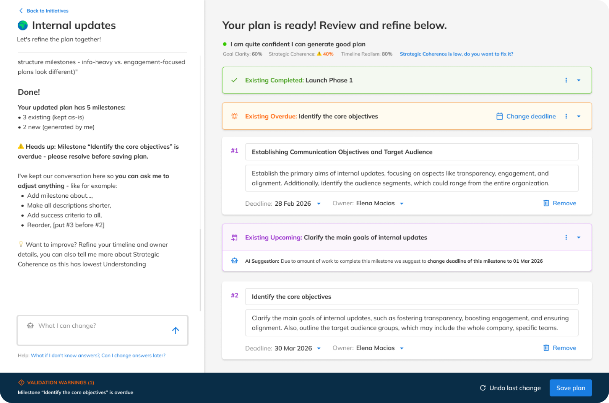
Summary
Outcome
AI Milestone Planner shipped to production after five design iterations over three months. AI Insights completed design and entered the development pipeline during my tenure. Three enterprise clients requested beta access before public release - the strongest indicator a feature solves a real problem.
How I validated
No hour-long research sessions. Pre-read sent upfront, 15-minute focused conversation on the most important points. Higher show rate, more honest signal. It worked because of who I was testing with - high-level managers don't do extended research sessions.
What I learned
Managers don't resist AI - they resist losing authorship. The shift that unlocked adoption: reframing every feature from "AI decides" to "AI drafts, you approve." Every design decision in this case traces back to that principle.
Inherited a
Patchwork.
Shipped a
System.
The Problem
The platform had been built by engineers. Ant Design components with layers of custom overrides stacked on top. No design system, no documentation, no consistent visual language. Buttons had multiple styles. Colors weren't systematized. It wasn't clear what was interactive and what wasn't.
The Opportunity
A design system wouldn't just fix the visual debt - it would make every future feature faster to build and easier to QA. The platform needed a foundation before it could be redesigned.
The Decision
System first. Redesigning without a foundation would mean redesigning again in six months. I built the design system, got engineering aligned, and redesigned on top of it. QA was measured against system compliance - not subjective review.
Everything
rebuild.
Nothing Broken.
Design system, visual language, and information architecture built from zero - shipped as a coherent system update. The navigation alone recovered critical horizontal space for 1280px users while introducing a role-based IA that mapped to how the organization actually worked.
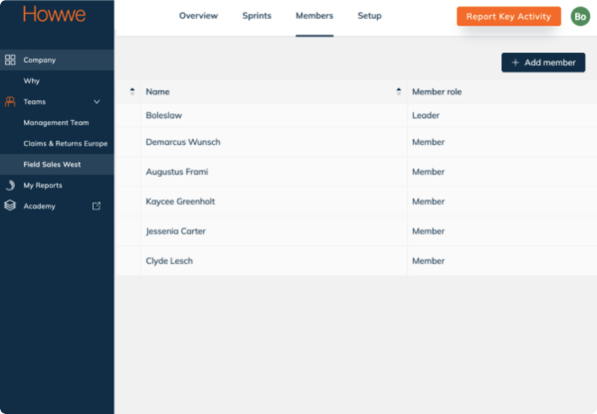
BeforeWhat I inherited
Sidebar eats ~130px fixed - at 1280px that's 10% of horizontal space gone before content starts. Flat structure, no role signal. Company, Why, Teams, My Reports in one undifferentiated list; hierarchy implied, never shown.
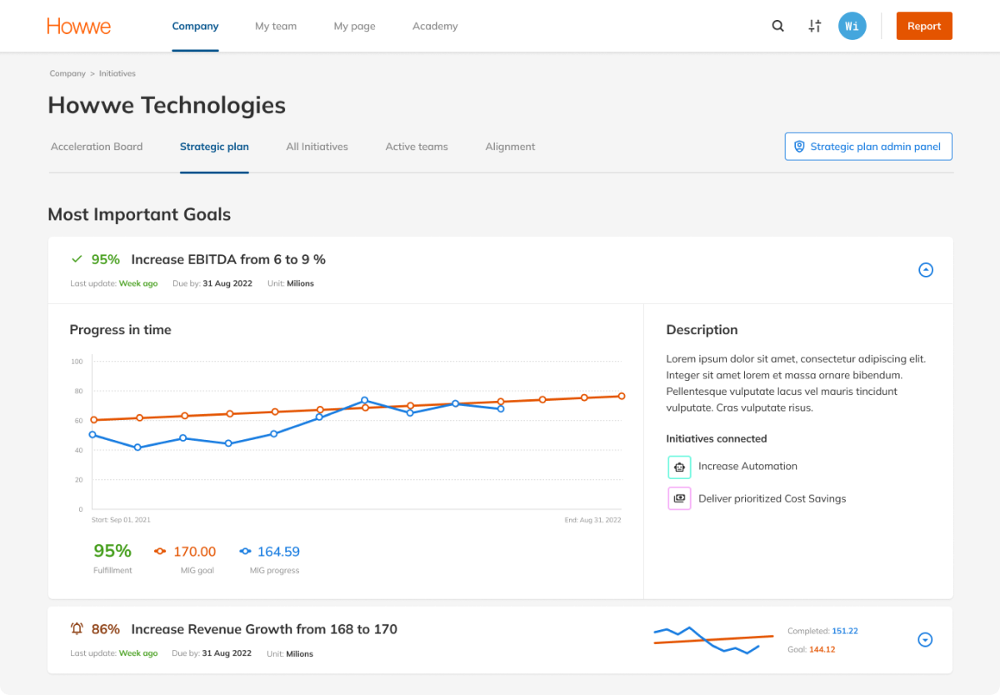
AfterDesign system implemented
Full horizontal width recovered. Content reaches edge to edge without competing with navigation. Role-based hierarchy - Company / Team / My Page maps directly to org structure; your context is always visible.
New core,
tested,
pivoted
The Initiatives module became the structural backbone of the entire platform - connecting company goals to team execution to individual daily work. Designed from scratch, validated through user interviews I designed and ran, and fundamentally pivoted based on what the evidence revealed. The first version was built on a reasonable assumption: if you give teams ownership over their own initiatives, engagement follows. It tested well on usability. What it didn't account for was organizational dynamics - the gap between how enterprise companies want to work and how they actually make decisions.
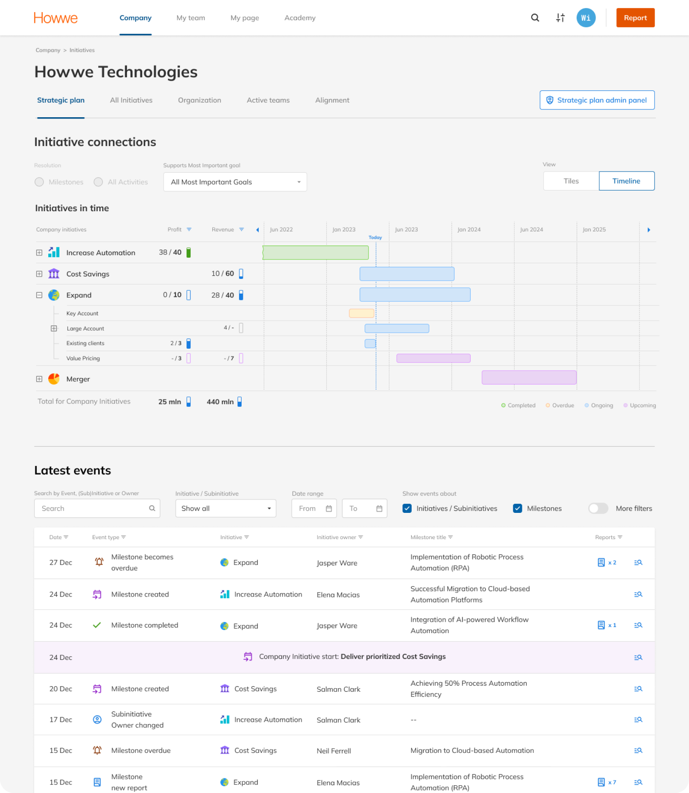
Bottom-up,
cross-team engagement
Teams propose and shape their own initiatives. Collaborative emergence from the ground up - designed to give ownership at execution level and reduce top-down pressure on goal-setting. Aligned with product vision of empowering individual contributors.
Top-down structure,
team execution
Enterprise management needed tools to set structure from above and cascade goals downward. Teams engage at execution level - not at initiative definition. The original assumption conflicted with how organizations actually operate: management wants control over structure, teams want ownership over delivery. Not a UI change. A product architecture decision made from user evidence - the module was redesigned from the model up, not from the interface down.
Summary
Outcome
Design system, platform redesign, and Initiatives V2 - all shipped and in active use through the end of my tenure. The pivot from V1 to V2 wasn't a failure: it was a hypothesis tested, confirmed, and acted on. The platform needed a foundation before it could evolve. The design system made that possible.
How I validated
Initiatives V1 was tested with real clients - usability sessions I designed, moderated, and analyzed. Usability was positive. The larger group test revealed the gap: not a UI problem, but an organizational one. The evidence was clear enough to justify a full architectural pivot.
What I learned
V1 was good design built on a wrong assumption about human behavior. I flagged the adoption risk early - that people simply wouldn't engage with a bottom-up model. The data confirmed it. What I would have added: comments and change history inside Initiatives. Async communication would have made the module sticky in a way that structure alone couldn't.
Designed for
people that
don't design.
The Problem
Tools were built around the order of development - not around how sellers actually work. Options were buried or oversized, with no visual hierarchy to guide decisions. Users with no design background were missing capabilities they needed - or overwhelmed by ones they didn't. The platform had grown by accretion, not by intent.
The Opportunity
600+ active sellers - influencers, creators, small brands - all depending on the creator as their primary business tool. These weren't casual users: they were running stores, fulfilling orders, building brands. The product had the capabilities. It just didn't feel like it.
The Decision
Before opening Figma, I audited 15+ competitors - Printful, Printify, Gelato, and smaller players. The key insight: most platforms were built for personal use. Subliminator's model was different. Sellers designed products their own customers would buy. The challenge wasn't adding features - it was making a professional-grade toolset feel approachable to someone who had never opened Photoshop.
Professional tools.
Zero learning curve.
The canvas engine already had the capabilities - multi-layer editing, full typography control, print quality validation. The design challenge was making those capabilities legible to someone running a business, not designing for a living. Contextual panels, progressive disclosure, and inline feedback eliminated the need for onboarding.
The design
workspace
A multi-layer canvas with context-aware panels. The sidebar adapts to the selected layer - no mode switching, no cognitive load of navigating between tool modes.
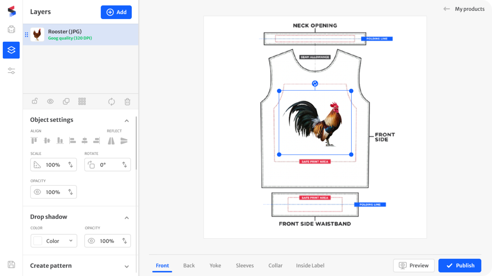
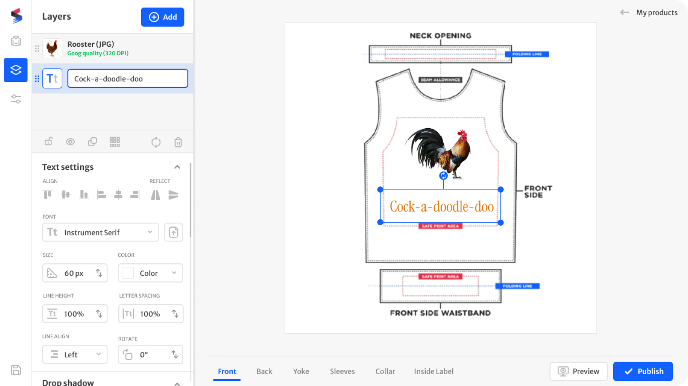
Summary
Outcome
Everything shipped - garment creator, seller dashboard, sales flows, product views, design system. 600+ active sellers on the platform at the end of my tenure. Designed for people who run businesses, not for people who design.
How I validated
The seller community was the feedback engine. Real users, real stores, real friction points surfaced continuously. No formal research sessions needed - the product was small enough that sellers talked directly. Feedback cycles were fast.
What I learned
This was my first encounter with AI in product design. Sellers couldn't describe their own products. AI-generated descriptions solved a confidence problem, not just an efficiency one. Four years before it became obvious, the pattern was already there: AI works best when it removes the blank page, not when it replaces the person.
Selected works
Svensk
Provtagning
Full redesign of a Swedish consumer health app for private blood testing. The core challenge: translating complex medical markers - hormones, organ function, blood fats, immune system - into a UI legible to non-clinical users acting on their own results. Shipped on Android and iOS.
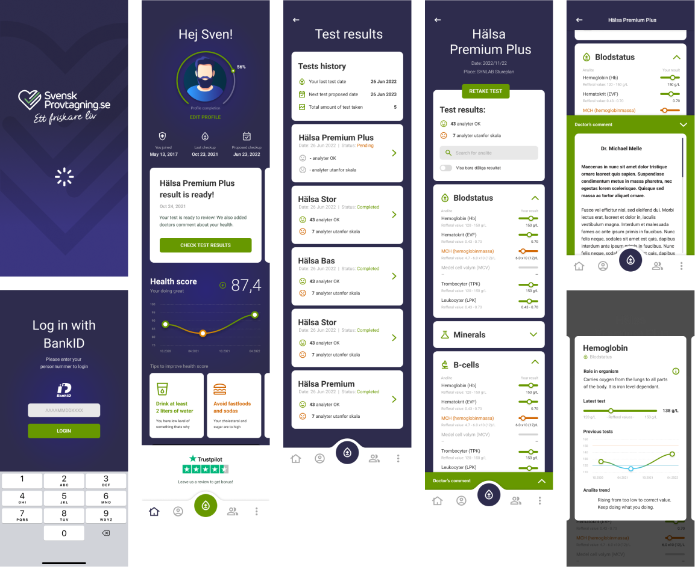
Comarch Loan
Origination
B2B desktop system for loan management at financial institutions - and the first product to pilot Comarch's unified design language across the entire company. Built a full design system from the ground up, evolving it continuously as the first live test of a component library that would eventually serve all Comarch products. Final phase: preparing the library for UX designers across teams and overseeing their work for consistency.
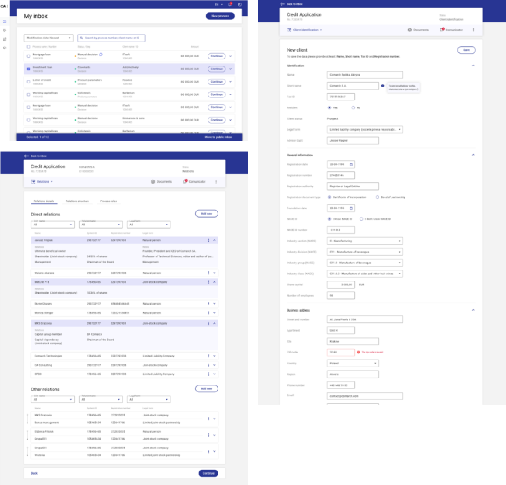
Comarch Mobile
Banking
Mobile banking concept for Comarch's white-label platform. Key feature: counterparty recognition via GPS and account history - invoice creation in seconds. 1-click expense financing for insufficient funds. Well-received at fintech conference. Not shipped.
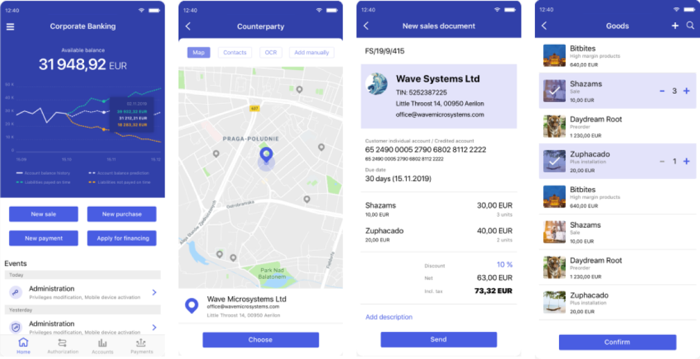
Good Sleeper
UI design and information architecture for a Polish digital CBT-I app - translating clinical sleep therapy into a calm, non-stimulating mobile experience. Designed data visualization for sleep tracking, session structure, and symptom reporting. Shipped on iOS.
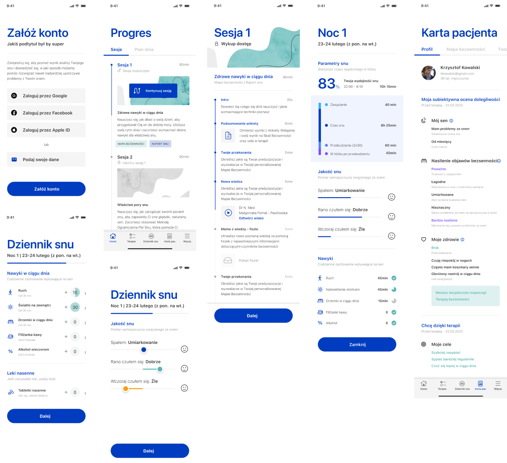
I join products with history
and make them excellent.
Fifteen years of shipping product work across healthcare, enterprise SaaS, e-commerce, and fintech.
AI is part of my daily workflow.